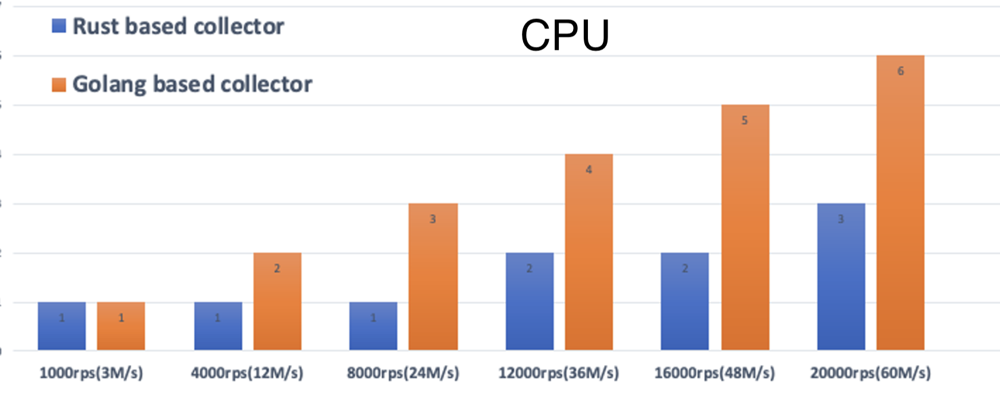

class: center, middle # Lessons: Porting a Streaming Pipeline from Scala to Rust ## 2023 Scale by the Bay .red[Evan Chan] .red[Principal Engineer - [Conviva](https://conviva.com)] http://velvia.github.io/presentations/2023-conviva-scala-to-rust --- # The Data World used to be All JVM * Hadoop * Spark/Flink * Hive * Lucene/ElasticSearch * Apache Cassandra, HBase, Druid, etc. * Zookeeper --- # Why the Data World is Going Native * The rise of Python and Data Science * Led to AnyScale, Dask, and many other Python-oriented data frameworks * Rise of newer, developer-friendly native languages (Go, Swift, Rust, etc.) * Migration from Hadoop/HDFS to more cloud-based data architectures * Apache Arrow and other data interchange formats * Hardware architecture trends - stagnant clock frequencies, rise of GPUs etc --- # Why Rust for Data Pipelines? * Safe, fast, and high-level abstractions * Functional data patterns - `map`, `fold`, pattern matching, etc. * Static dispatch and no allocations by default * PyO3 - Rust is the best way to write native Python extensions | JVM | Rust projects | | ------- | ---- | | Spark, Hive | [DataFusion](https://arrow.apache.org/blog/2019/02/04/datafusion-donation/), Ballista, [Amadeus](https://github.com/constellation-rs/amadeus) | | Flink | [Arroyo](https://github.com/ArroyoSystems/arroyo), [RisingWave](https://github.com/risingwavelabs/risingwave), Materialize | | Kafka/KSQL | [Fluvio](https://www.fluvio.io/docs/) | | ElasticSearch / Lucene | [Toshi](https://github.com/toshi-search/Toshi), MeiliDB | | Cassandra, HBase | [Skytable](https://github.com/skytable/skytable), Sled, Sanakirja... | | Neo4J | [TerminusDB](https://github.com/terminusdb/terminusdb), [IndraDB](https://github.com/indradb/indradb) | ??? Huge momentum for Rust projects. Many not even listed here... --- # Conviva ??? Conviva does streaming, real-time, user experience analytics. We help our clients to instantly troubleshoot CDN and other user-facing issues, for example. --- class: center, middle # About our Architecture <div class="mermaid"> graph LR; SAE(Streaming<br>Analytics<br>Engine) subgraph ingest direction BT Sensors --> Gateways end Gateways --> Kafka Kafka --> SAE SAE --> DB[(Metrics<br>Database)] DB --> Dashboards </div> --- # Conviva: Massive Real-time Streaming Analytics - 5 trillion events processed per day - 800-2000GB/hour (not peak!!) - Started with custom Java code, also went through Spark Streaming and Flink iterations - Most services and components in production are written in Scala - Today: 420 pods running custom Akka Streams processors, >1600 Kafka partitions --- # What We Are Porting to Rust - One of our main production streaming data pipelines - Upgrade to next generation operator-based data architecture - At the same time, significantly boost performance and reduce cost - One major gateway service - Increase efficiency for one major cost component - Some end user SDK / sensor code - Consolidate fragmented code base in C, C++, Swift, Android, etc. --- # Journey - Started with a Hackathon a year ago - Wrote a small portion of Kafka ingestion in Rust - Test out basic asynchronous processing, Rust dev & infrastructure - Gateway service was first rewritten to Go from Java/Scala - After rewriting from Go to Rust, much more improvement than expected - 1.5 month sprint to port new Scala pipeline to Rust - Stopped to compare performance and validate it was worth going further - Now 20-25 people across 4 teams --- # Initial Rust Streaming Prototype Shows Promise <div class="mermaid"> graph LR; Kafka --> RustDeser(Rust Deserializer) RustDeser --> RA(Rust Actors - Lightweight Processing) </div> | Measurement | Improvement over Scala/Akka | | ----------- | ----- | | Throughput (CPU) | 2.6x | | Memory used | 12x | - Mostly I/O-bound lightweight deserialization and processing workload - Found out Actix does not work well with Tokio - Initial recommendation was to stay with Scala, due partly to time constraints --- # Performance Results - Gateway  --- # Performance Results - Gateway <img src="gateway-rust-mem.png" width="90%" style="float:center"> --- # Our Team and Challenges - At least 3 different teams located across 3 timezones - Widespread expertise in Scala, Java, Akka, functional - Some newcomers familiar with C++ - Very little existing Rust expertise --- # Promising Data Pipeline Port - Ported our newest Scala data platform to Rust - More CPU-bound, heavy data processing with flexible processing definition - Neither Rust nor Scala is productionized nor optimized - Same architecture and same input/outputs - Scala version was not designed for speed, lots of objects - Rust version focused on static dispatch and minimizing allocations | Type of comparison | Improvement over Scala | | ---- | ---- | | Throughput, end to end | 22x | | Throughput, single-threaded microbenchmark | 109x | | Throughput, microbenchmark (bigger batch size) | 40x | --- class: center, middle # Let's Dive into some Code! ## Data Structures, Dispatch, Async, etc. --- # Building a Flexible Streaming Engine <div class="mermaid"> graph LR; RawEvents(Raw Events) RawEvents --> Extract1 RawEvents --> Extract2 Extract1 --> DoSomeMath Extract2 --> TransformSomeFields DoSomeMath --> Filter1 TransformSomeFields --> Filter1 Filter1 --> MoreProcessing </div> - Configurable DAG of data operators for programmable stream processing - Need flexible data types depending on scenario - How to build an efficient yet dynamic stream processor? --- # Scala: Object Graphs and Any ```scala class Timeline extends BufferedIterator[Span[Payload]] final case class Span[+A](start: Timestamp, end: Timestamp, payload: A) { def mapPayload[B](f: A => B): Span[B] = copy(payload = f(payload)) } type Event[+A] = Span[EventsAtSpanEnd[A]] @newtype final case class EventsAtSpanEnd[+A](events: Iterable[A]) ``` - `BufferedIterator` must be on the heap - Each `Span` `Payload` is also boxed and on the heap, even for numbers - To be dynamically interpretable, we need `BufferedIterator[Span[Any]]` in many places :( - Yes, specialization is possible, at the cost of complexity --- # Rust: Using Enums and Avoiding Boxing ```rust pub enum Timeline { EventNumber(OutputSpans<EventsAtEnd<f64>>), EventBoolean(OutputSpans<EventsAtEnd<bool>>), EventString(OutputSpans<EventsAtEnd<DataString>>), } type OutputSpans<V> = SmallVec<[Spans<V>; 2]>; pub struct Span<SV: SpanValue> { pub time: TimeInterval, pub value: SV, } pub struct EventsAtEnd<V>(SmallVec<[V; 1]>); ``` In the above, the `Timeline` enum can fit entirely in the stack and avoid all boxing and allocations, if: - The number of spans is very small, below limit set in code - The number of events in each span is very small (1 in this case, which is the common case) - The base type is a primitive, or a string which is below a certain length ??? It's important in Rust to think about data structure design early on, especially with respect to ownership and lifetimes. --- # Comparison of Scala and Rust Data Structures .left-column[ Scala: <div class="mermaid"> graph TB; ArraySpan["`Array[Span]`"] TL(Timeline - BufferedIterator) --> ArraySpan ArraySpan --> Span1["`Span(start, end, Payload)`"] ArraySpan --> Span2["`Span(start, end, Payload)`"] Span1 --> EventsAtSpanEnd("`EventsAtSpanEnd(Iterable[A])`") EventsAtSpanEnd --> ArrayEvent["`Array[A]`"] </div> ] .right-column[ Rust, mostly stack based / no allocations: <div class="mermaid"> flowchart TB; subgraph Timeline subgraph OutputSpans subgraph Span1 subgraph Events EvA ~~~ EvB end TimeInterval ~~~ Events end subgraph Span2 Time2 ~~~ Events2 end Span1 ~~~ Span2 end Discriminant ~~~ OutputSpans end </div> ] ??? Scala: Buffers use Arrays internally, which is separate obj. Each Span is a case class, that must be separate object. The Payload is yet another obj because of boxing/Any. Events are a list which internally probably uses an Array. Rust: Using an enum for Timeline avoids boxing for generic types. OutputSpans is SmallVec, inline for <= 2. Span is struct, inlined. --- # Avoiding Allocations using SmallVec and SmallString [SmallVec](https://docs.rs/smallvec/latest/smallvec/) is something like this: ```rust pub enum SmallVec<T, const N: usize> { Stack([T; N]), Heap(Vec<T>), } ``` The enum can hold up to N items inline in an array with no allocations, but switches to the Heap variant if the number of items exceeds N. There are various crates for small strings and other data structures. --- # Static vs Dynamic Dispatch Often one will need to work with many different structs that implement a `Trait` -- for us, different operator implementations supporting different types. Static dispatch and inlined code is much faster. 1. Monomorphisation using generics * `fn execute_op<O: Operator>(op: O) -> Result<...>` * Compiler creates a new instance of `execute_op` for every different O * Only works when you know in advance what Operator to pass in 2. Use Enums and enum_dispatch * `fn execute_op(op: OperatorEnum) -> Result<...>` 3. Dynamic dispatch * `fn execute_op(op: Box<dyn Operator>) -> Result<...>` * `fn execute_op(op: &dyn Operator) -> Result<...>` (avoids allocation) 4. Function wrapping * Embedding functions in a generic struct --- # enum_dispatch Suppose you have ```rust trait KnobControl { fn set_position(&mut self, value: f64); fn get_value(&self) -> f64; } struct LinearKnob { position: f64, } struct LogarithmicKnob { position: f64, } impl KnobControl for LinearKnob... ``` [enum_dispatch](https://docs.rs/enum_dispatch/latest/enum_dispatch/) lets you do this: ```rust #[enum_dispatch] trait KnobControl { //... } #[enum_dispatch(KnobControl)] enum Knob { LinearKnob, LogarithmicKnob, } ``` ??? enum_dispatch generates a pattern match which dispatches the call to its variants. This is still much more efficient compared with dynamic dispatch, because of avoiding vtable lookup and a dynamic jump, instead the code can possibly be inlined. --- # Function wrapping Static function wrapping - no generics ```rust pub struct OperatorWrapper { name: String, func: fn(input: &Data) -> Data, } ``` Need a generic - but accepts closures ```rust pub struct OperatorWrapper<F> where F: Fn(input: &Data) -> Data { name: String, func: F, } ``` --- # Actors: From Actix to our own mini Actors 1. Initial Hackathon prototype used [Actix](https://actix.rs) - Actix has its own event-loop / threading model, using [Arbiters](https://actix.rs/docs/actix/arbiter/) - Difficult to co-exist with Tokio and configure both 2. Moved to [tiny-tokio-actor](https://github.com/fdeantoni/tiny-tokio-actor) - Really thin layer on top of Tokio - 25% improvement over rdkafka + Tokio + Actix - 2x improvement over Akka 3. Ultimately wrote our own, 100-line mini Actor framework - tiny-tokio-actor required messages to be `Clone` so we could not, for example, send `OneShot` channels for other actors to reply - Wanted `ActorRef<MessageType>` instead of `ActorRef<ActorType, MessageType>` - supports `tell()` and `ask()` semantics ??? Tokio is, by the way, Rust's dominant async library --- # Replacing Akka: Actors in Rust ```rust pub struct AnomalyActor {} impl AnomalyActor { pub async fn create() -> ActorRef<Anomaly> { channel_actor::start(AnomalyActor {}, 32).await } } #[async_trait] impl ChannelActor<Anomaly, AnomalyActorError> for AnomalyActor { async fn handle( &mut self, msg: Anomaly, ctx: &mut ActorContext<Anomaly>, ) -> Result<(), Report<AnomalyActorError>> { use Anomaly::*; match msg { QuantityOverflowAnomaly { ctx: _, ts: _, qual: _, qty: _, cnt: _, data: _, } => {} PoisonPill => { ctx.stop(); } } Ok(()) } } ``` --- # Rust Bringup Plan - Initial team of very senior developers with more Rust experience, came up to speed first - and carry out bulk of initial Scala to Rust port - Have organized list of learning resources - 2-3 weeks to learn and come up to speed - Small projects, starting with synchronous code - Dedicate lots of time to reviewing code, helping others --- class: center, middle # "Cargo is the best build tool ever." --- # Cargo and Rust Builds - Almost no dependency conflicts due to multiple dep versioning - Configuration by convention - common directory/file layouts for example - Really simple .toml - no need for XML, functional Scala, etc. - Rarely need code to build anything, even for large projects ```toml [package] name = "telemetry-subscribers" version = "0.3.0" license = "Apache-2.0" description = "Library for common telemetry and observability functionality" [dependencies] console-subscriber = { version = "0.1.6", optional = true } crossterm = "0.25.0" once_cell = "1.13.0" opentelemetry = { version = "0.18.0", features = ["rt-tokio"], optional = true } ``` ??? Rant here, hope nobody gets offended. Why do I have to write code to build something? When it's late at night and I just want to test something, I don't want to have to think about whether I need to map or flatmap some value and what 5 layers of config I need to change to get something to build correctly. --- # General Rust Observations “I also like that if it compiles, I know it will work, so it gives confidence.” Lifetimes are hard. "Just extracting out a basic function sometimes becomes something you have to think on." "I also enjoy the fact that the default route is performant. It makes you write performant code, and if you go out the way, it becomes explicit (e.g., with `dyn`, `Boxed`, or `clone` etc). " "Async: It is well designed... Yes, it is still pretty complicated piece of code, but the logic or the framework is easier to grasp compared to other languages." --- # Challenges - "Rust is hard, takes a lot of getting used to" - Lifetimes - Understanding compiler errors - Some simple things are hard: eg returning Iterators - IDE support, especially debugging in VSCode - Learning new tooling: CI, code coverage, testing, etc. - Async: - Frequent point of confusion: When to use Arc, Mutex, RwLock, when to `clone()` - "Pin and Unpin look quite scary to me" --- # Overcoming Challenges - Have a smaller team start first and sort out some issues - Having good RustDoc, project documentation - Having people start with testing, end to end tests - Taking advantage of learning resources * ChatGPT! * Rust Book * Specific talks about data structures, other topics - Office hours - Async: - We divide our streaming platform into data logic and asynchronous streaming actor portions. - Result: only teammates working in the streaming actor portions need to learn async --- # Rust Resources and Projects https://github.com/velvia/links/blob/main/rust.md - this is my list of Rust projects and learning resources https://github.com/rust-unofficial/awesome-rust https://www.arewelearningyet.com - ML focused --- # What do we miss from Scala? - ScalaTest DSLs - Good streaming libraries - like Monix, Akka Streams etc. - I guess all of Akka - "Less misleading compiler messages" - Rust error messages read better from the CLI, IMO (not an IDE) --- # Takeaways - Porting part of our data stack to Rust has been worth it. - It's a long journey. - Structuring a project for successful onramp is really important - Think about data structure design early on We are hiring across multiple roles/levels! --- # Thank You Very Much! .left-column[ * https://velvia.github.io/about * https://github.com/velvia * [@evanfchan](https://twitter.com/Evanfchan) * [IG: @platypus.arts](http://instagram.com/platypus.arts) ] .right-column[ <img src="rathtrevor_stars.jpeg" alt="Visit http://instagram.com/platypus.arts" width="90%"> ]